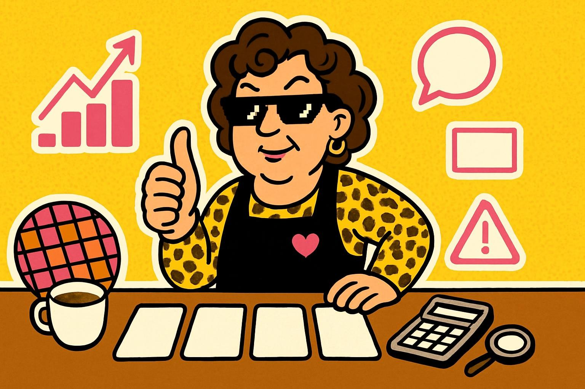

熱門股 · 2026-05-27友達
成交值排行靠前、討論度高，但面板景氣循環很硬。
阿姨一句話：熱鬧可以看，衝之前先看自己懂不懂。
今天為什麼被選到
成交值與討論度高，面板題材受到市場注意。
阿姨看風險
- 風險等級：中高
- 主要風險：面板景氣循環大，價格波動可能很快。
- 適合觀察：想練習看景氣循環與成交量的人。
- 不適合：只想找穩定配息或不能接受劇烈波動的人。
⚠️ 阿姨的風險提醒（你一定要看）
📌 本站所有股票 ETF 內容僅供教育與資訊參考，不是投資建議，不保證任何收益。
📌 所有數字與範例皆為靜態展示資料，未串接即時市場數據，請勿以此做為買賣依據。
📌 任何投資都有風險，包括本金損失的可能。投資前請自行做功課、評估財務狀況，必要時諮詢專業顧問。